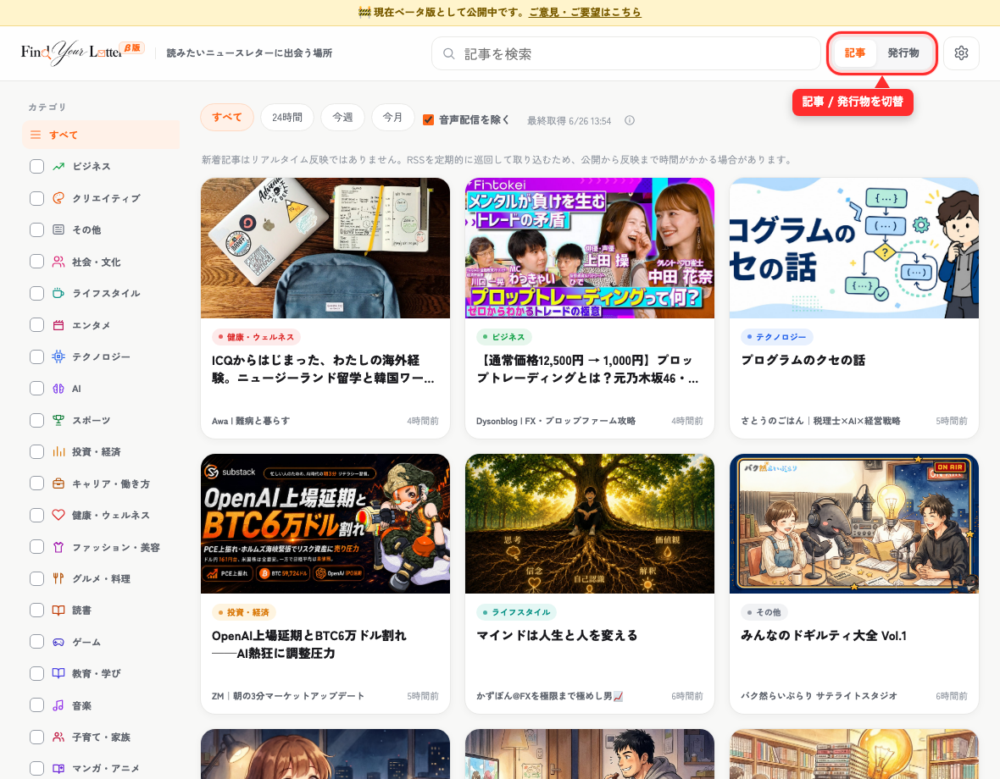
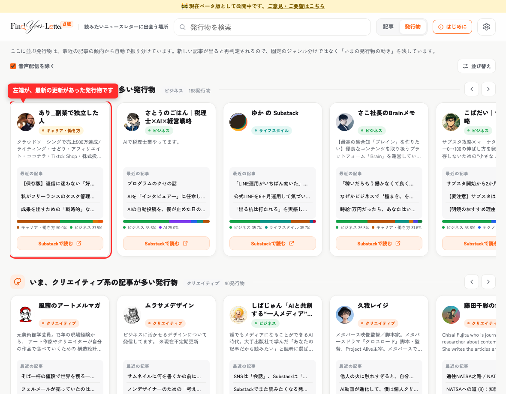
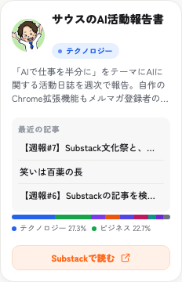

ABOUT & GUIDE
読みたい日本語ニュースレターを、カテゴリの棚から見つける。
Find Your Letter は、日本語の Substack ニュースレターをカテゴリごとに集めたキュレーションポータルです。記事から探す・発行物から探す、2つの見方で、まだ知らない書き手に出会えます。
新着記事を、カテゴリ・検索で絞って読む
トップは「記事ビュー」。投稿日時が新しい順に記事カードが並びます。上部のカテゴリタブや検索を使って、興味のあるテーマだけに絞り込めます。気になったカードを選ぶと、配信元（Substack）の記事ページが開きます。

カテゴリタブ
「すべて」「ビジネス」「AI」など、上部のタブでジャンルを切り替え。スマホでは記事一覧を左右スワイプでも切り替えられます。
検索・期間フィルタ
キーワード検索や期間の絞り込みで、読みたい記事だけを表示。
記事カード
サムネイル・タイトル・発行物名が一覧で見え、選ぶと配信元の記事が開きます。
「いま、何を書いている人か」で書き手と出会う
右上のトグルで「発行物ビュー」に切り替えると、発行物（書き手）がカテゴリごとの棚に並びます。棚は「最近そのジャンルの記事が多い発行物」が先頭に来るよう自動で並び替わります。固定のジャンル分けではなく、最近の発信内容で動的に振り分けています。


- 名前とカテゴリバッジで、どんな発行物かひと目で分かる
- 最近の記事のタイトルが数件並ぶ
- カテゴリバランスバー＝直近の記事をAIが分類した「最近の傾向」。ホバー／タップで内訳が見られます
- 「Substackで読む」から、その発行物のページへ
どんな発行物が掲載されるか
掲載基準
1
日本語で発信している Substack の発行物であること
2
直近に更新がある（活動中）こと
3
実体のある記事があること
規模（購読者数）は問いません。 小さい・新しい発行物こそ見つけてもらうのが Find Your Letter の目的です。掲載は推薦ネットワーク等からの自動収集と人手の確認で行っており、順位付けや優劣はつけません。掲載を希望しない場合は、下の「掲載削除フォーム」から取り下げできます。